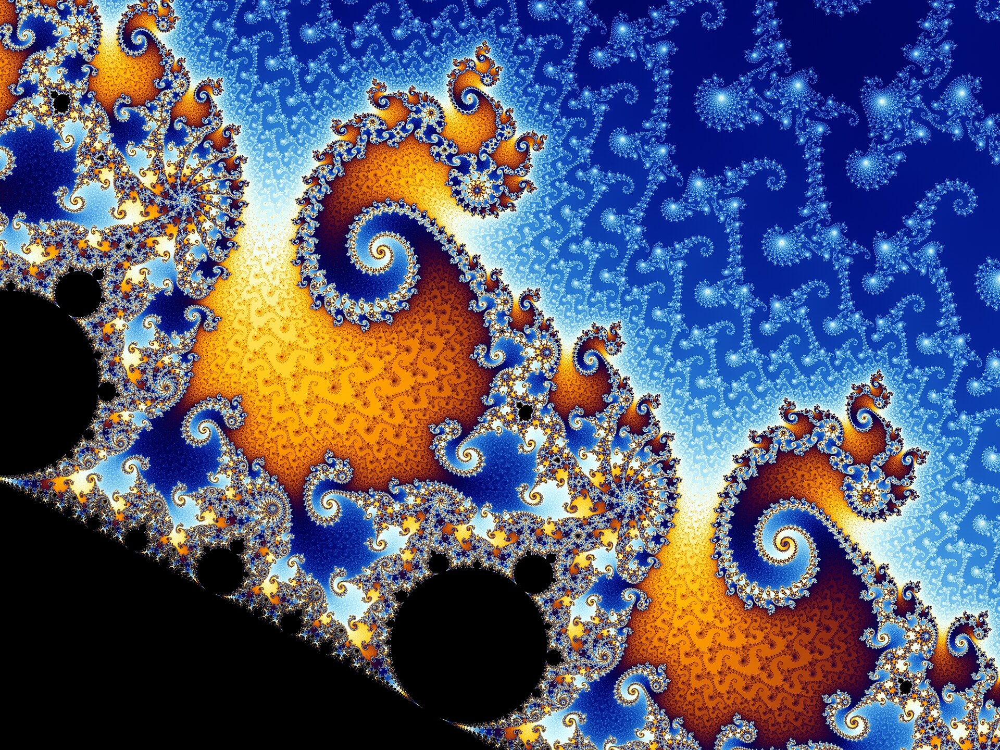
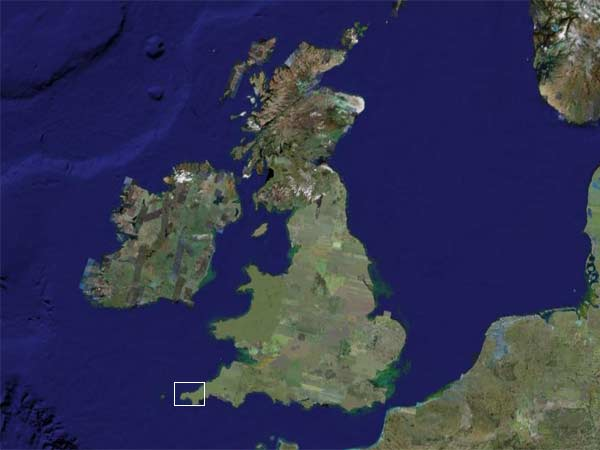
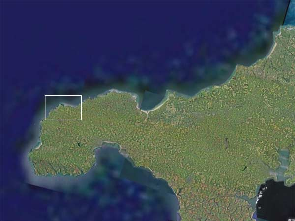
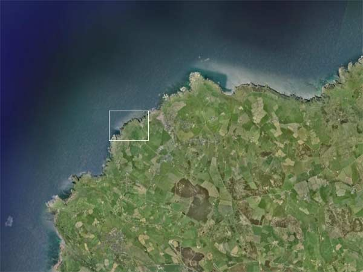
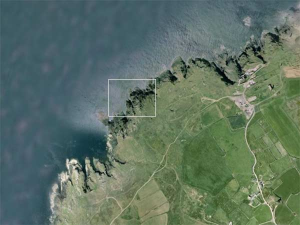
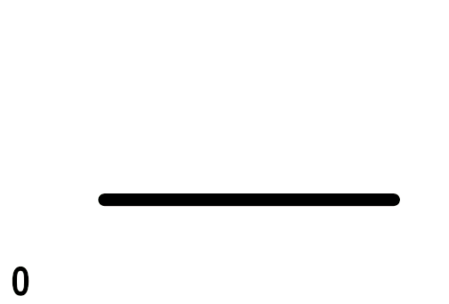
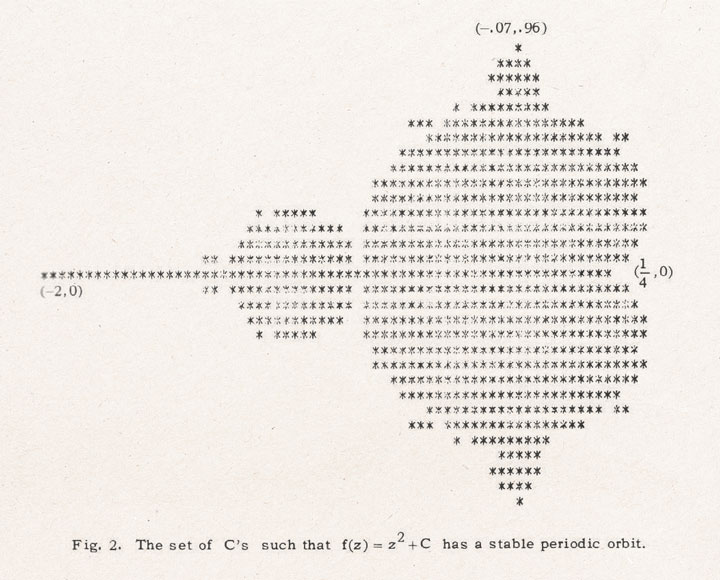
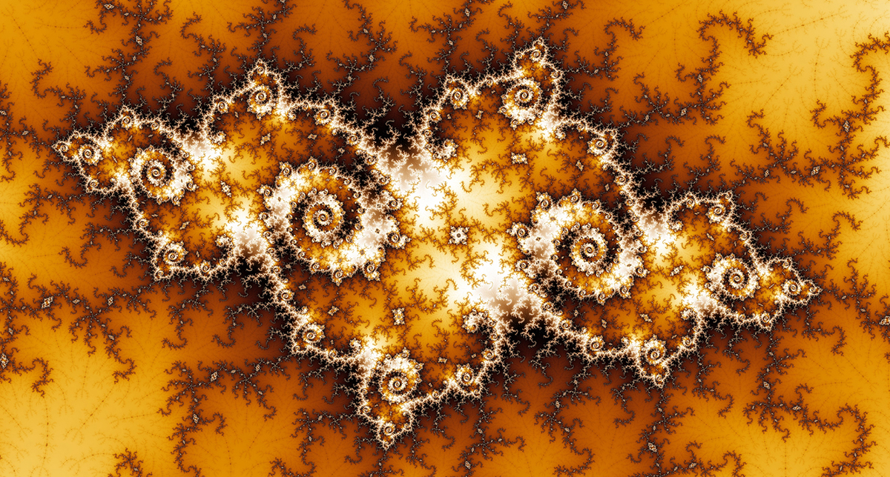
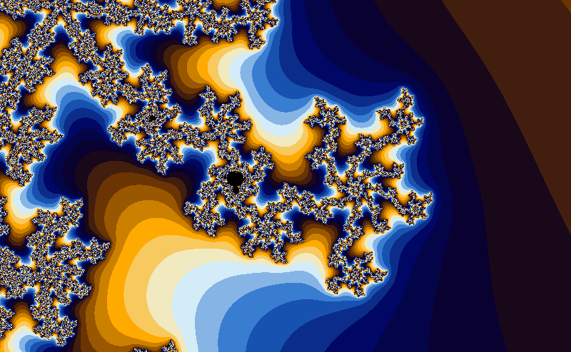
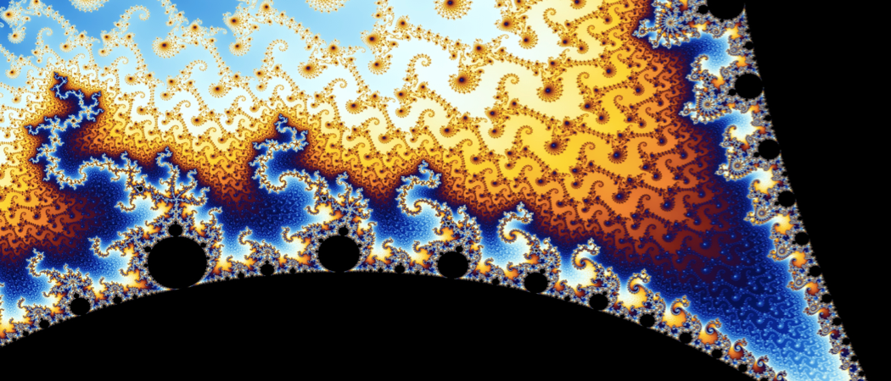

What are Fractals?
Fractals are complex geometric shapes that exhibit self-similarity at different scales. They are created by repeating a simple process over and over again, resulting in intricate patterns that can be found in nature, art, and mathematics.
A fractal is a shape where the same kind of irregular pattern repeats at every scale — the closer you look, the more detail you find.

The most well known fractal is the Mandelbrot Set (depicted above). In this page I will explore the different types of fractals, the rules and programs that generate them, and their applications.
There are many different fractals, each with their own unique properties and methods of generation, but they can be sorted cleanly into these two categories:
Let's start with stochastic fractals.
Stochastic fractals are generated using random processes. They are often used to model natural phenomena such as clouds, mountains, and coastlines. The randomness in their generation leads to a more organic and less predictable appearance.
One of the most famous examples of a stochastic fractal is the Brownian tree, which is created by simulating the random motion of particles. As particles move randomly and stick together when they collide, they form branching structures that resemble trees or lightning bolts.
This Brownian tree starts with one tiny dot in the middle. Then it keeps adding new dots one at a time.
Each new dot begins outside the tree and moves in a random direction, a little like a speck of dust drifting around in the air.
It keeps taking small random steps until it touches the tree. When that happens, it stops and becomes part of the tree.
That is why the shape looks branchy. New dots do not spread out evenly. They tend to stick to the outer edges first, so the tree grows outward in uneven arms instead of filling the space smoothly.
Stochastic fractals are not only found in simulations. Some of the best examples are all around us in nature.
Here's some pictures of a different stochastic fractal:




Yup, it's just the coastline of Britain!
A coastline looks different depending on how closely you look at it.
From space, you see large bays and peninsulas. Zoom in and those bays have smaller inlets. Zoom in further and those inlets have rocky notches. Keep zooming and the pattern keeps going — jagged edges all the way down to individual rocks and pebbles.
No two coastlines are the same, and no two sections of the same coastline are the same either. That is because coastlines are shaped by a huge number of overlapping random processes happening over millions of years — waves, storms, glaciers, earthquakes, and the slow wearing away of different types of rock. None of these processes follow a fixed plan, so the result is irregular and unpredictable.
That unpredictability is exactly what makes a coastline stochastic. Stochastic just means that randomness is built into the process that created the shape.
You cannot write down a simple rule that produces a coastline exactly — you can only describe the kind of randomness involved.
This connects directly to the Brownian tree. The tree grows the same way — each new particle takes a random path before it sticks. No two runs of the simulation produce the same shape, just like no two coastlines are the same.
But both always produce the same kind of shape: branchy, irregular, and self-similar at different scales.
The same kind of randomness shows up in mountain ranges, river deltas, clouds, and tree branches. None of them follow a fixed plan, but all of them end up with the same self-repeating irregular quality. That is the signature of a stochastic fractal.
Deterministic fractals are generated using a fixed set of rules. They are often created using mathematical formulas or algorithms, and they can be precisely defined and reproduced.
Iteration is the process of repeating a set of instructions or a mathematical operation multiple times. In the context of fractals, iteration is used to generate the complex patterns by applying a simple rule repeatedly.
Let's start with a simple example.
The Dragon Curve, otherwise known as the Paper Folding Fractal, is generated by following a simple set of instructions. In fact, you can do it yourself right now!
The magic of this process is that no two segments of the paper occupy the same space. No matter how many pieces you join together (such that it's as though they were one long strip) the Dragon Curve will always fit on the plane with no overlaps or crossovers.
There is another way to create the dragon curve, which is to start with a single line segment, and then continue to subdivide it into smaller and smaller segments, following a simple rule for how to bend the line at each stage. This method is more suitable for computer generation, and it produces the same final shape as the paper folding method:

Here is a zooming drawing of the dragon curve. It updates live as you zoom in, subdividing the edges once they get too big. See, the true fractal has an infinite number of subdivisions, so many that it is a solid shape with infinite detail on every edge. That's why it's called a fractal, even though the versions you can draw in real life don't exhibit infinite self-similarity. This is nowhere close to seeming perfect, because there are just so many lines to calculate, but it does create some cool artifacts, like how the order in which the segments are subdivided produces mini-dragon curves:
But that's it for fractals you can approximate by hand... it's about to get a lot more interesting and unpredictable with the help of computers!
One way to generate a deterministic fractal (like the Mandelbrot Set) is through looking at iterative sequences and seeing if they converge or diverge.
You can take a big dense group of numbers, apply an iterative rule to generate a sequence for each number, then colour them depending on whether their sequence converges or diverges.
In more mathematical terms, you calculate a set (unordered list with no duplicates) of all the numbers who's sequences converge.
It seems a bit arbitrary, and that's because it is. This process was selected because it produces visually appealing and mathematically interesting results.
A sequence converges if its terms approach a specific value or a stable cycle as you go through the sequence. In other words, the terms get closer and closer to a certain point, or go round in a loop. A sequence diverges if it does not approach any specific value, meaning the terms grow larger and larger ad infinitum.
Let's start with an example of an iterative process.
The way we write iterative rules in maths is like this:
Don't be thrown off by the notation - it's actually very simple.
You can decode it by choosing any number for n. Let's go with n = 0:
Now we can see that T1 is equal to T0 squared. If we choose a value for T0 then we can calculate T1. The value we choose determines all future values of T in the sequence. Let's say T0 = 2:
Now we can repeat the process to find T2:
We can keep going like this, plugging in the previous value to find the next one. This is the essence of iteration - using the output of one step as the input for the next step, giving us an infinite sequence of values for each possible starting value.
We can create a visualisation of that iterative rule we just used:
Drag the point to change the initial value:
I changed the letter T to a letter x. This is simply because I want to indicate that the variable now represents a distance rather than just a generic term in the sequence - it means exactly the same thing.
You might notice that the behaviour of the sequence changes drastically depending on the initial value.
Experiment with the simulation, and answer the questions below:
When x < -1,
the sequence
When -1 < x < 1,
the sequence
When x > 1,
the sequence
Now to make it 2-dimensionsl.
If you aren't familiar with complex numbers, then I suggest you read this page first.
The plan is to do exactly the same thing - each number in the sequence is the previous number squared.
But now, since the numbers are allowed to be complex numbers, we need to represent them as points in a plane: (I will use number, value, and point interchangeably from now on, since they mean the same thing in the context of complex numbers.)
Drag the point to change the initial complex value (real + imaginary):
I changed the variable letter to z now, because this is the convention when describing a complex number.
z0 is the number we start with.
z1, z2, z3, ... is a sequence of complex numbers.
Each number in the sequence is the previous number squared.
If zn approaches a stable point or cycle as n increases, the sequence converges.
If zn gets larger and larger as n increases, the sequence diverges.
The 2-dimensional version shows the same type of behaviour changes as the previous version, but the specifics are different.
Answer these questions describing the behaviour of the sequence:
If z is inside the unit circle (|z| < 1),
the sequence
If z is outside the unit circle (|z| > 1),
the sequence
These observations follow directly from the geometric interpretation of complex multiplication as a combination of scaling and rotation.
When you square a complex number, you double its angle and square its distance from the origin.
If the initial point is inside the unit circle, it gets closer to the origin with each iteration, leading to convergence. If it's outside the unit circle, it gets farther away, leading to divergence.
This 2-dimensional case seems more chaotic than the 1-dimensional case, but it still doesn't fit the strict definitions of chaotic - it's predictable if you have a good enough equation.
Luckily, making it chaotic is a very small step from here.
We simply add on a small constant to the number in between squaring it each time; the recurrence relation becomes:
Let's see what that looks like:
Drag the points to change the initial conditions:
When you move the orange dot representing the point c away from the origin, the converging region is no longer just the inside of the unit circle.
The fractal is defined by the shape that should replace the circle in order to correctly divide the convergent points from the divergent points.
The method for generating fractals from this sequence is as follows:
Choose a complex number for z0
Choose a complex number for c
Work out the successive values of zn using the formula.
Determine whether the sequence converges or diverges.
Sort the point accordingly:
If the sequence converges, then the point is a part of the set.
If the sequence diverges, then the point is not a part of the set.
It's impossible to do this process by hand - it might take years. This is definitely a task for computers:
You have to do this for every point in the complex plane, and then you get a visual representation of the set - it makes a shape. (In reality, it would be impossible to calculate every point as there are an uncountable infinity of them, but you can just take one point per pixel in the image and that's good enough.)
In other words, for each pixel in the image you want to generate:
Work out what complex number is closest to that pixel's location.
Apply the fractal generation process to that complex number.
Color the pixel based on the result.
There are different ways to create the shape, because there are two different points: z0 and c.
If you change c and z0, changing 2 complex (2D) numbers will give you 4 dimensions of change. This is no good, because we live in a 3D universe and ideally would like to draw the result on a 2D screen, and that would require a 4D visualization.
Instead, we can fix one of the values and vary the other. Which one we pick to keep still determines what type of fractal picture we will get. This way, there are only 2 dimensions of change, so we can draw it in a flat image.
In the Mandelbrot Set, we choose to keep z0 still. In fact, it always has to be zero. Then the point c can move around:
As you move the point, it reaches cycles with different numbers of points in different parts of the shape. For example, in the small bulb on the top left of the main cardioid, the sequence reaches a stable cycle with a pentagram shape.
There is another option for fractal generation which is not talked about much; it's the same as the Mandelbrot set up, except that z0 stays still at any value, not just zero.
You can move the point z0 in my simulation - it just changes the exact version of the fractal you get. Each value of z0 produces a unique fractal image.
In the Julia Set, we choose to keep c still. But it doesn't have to be fixed at the origin. In fact, each value of c gives you a different Julia Set:
Both sets produce intricate and beautiful fractal patterns, with the Mandelbrot Set often described as a "map" of the Julia Sets, as each point in the Mandelbrot Set corresponds to a different Julia Set. (Remember, they are really just slices of the same 4-dimensional shape.)
The first image of the Mandelbrot Set was produced in 1980 at IBM’s Thomas J. Watson Research Center by Benoit Mandelbrot, and early versions were commonly output as printer printouts, including dot-matrix or line-printer images.

The technicians reportedly trimmed or removed the jagged edges of the early Mandelbrot printouts because they assumed those irregular borders were just printer artifacts, not meaningful parts of the image. In hindsight, those “errors” were actually part of the fractal structure itself, which is why the set’s boundary became so famous.
Modern computers allow us to create much more detailed and colorful images of the Mandelbrot Set.
You choose the colour by counting how many iterations you have to calculate before you know the point is going to be outside the set. So, the inside stays solid black, and the outside becomes coloured (by escape-time).
Here are some images of the Mandelbrot Set generated with that colouring strategy:



I think you'll agree its quite impressive that these stunning images can be generated with just a simple mathematical formula.
One of the most remarkable properties of the Mandelbrot Set is that no matter how far you zoom in, you keep finding new detail. The boundary never smooths out — it stays endlessly complex.
The simulation below comprises 150 images of the same region at different zoom levels. Each frame is double the zoom of the previous, so the total zoom is nearly 1045 - an utterly incomprehensible number.
(Images generated with Kalles Fraktaler 2 +)